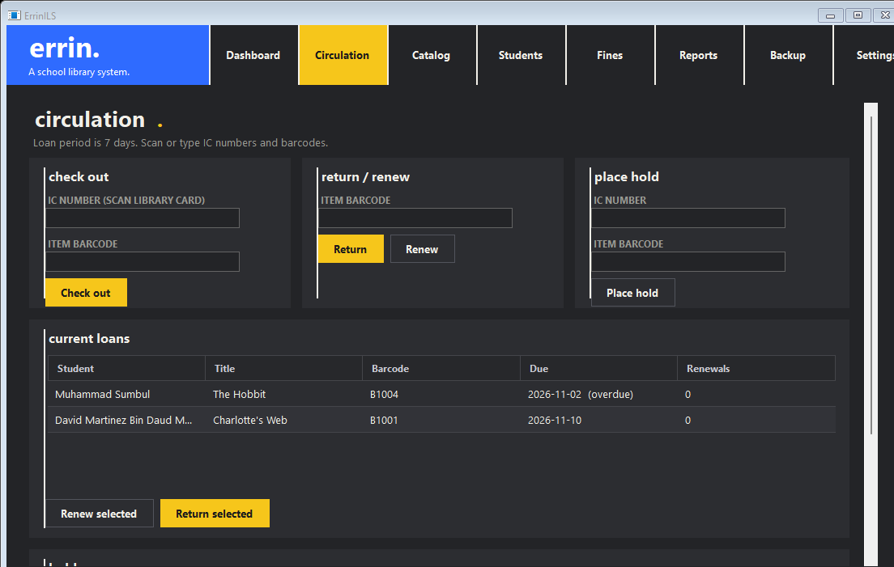
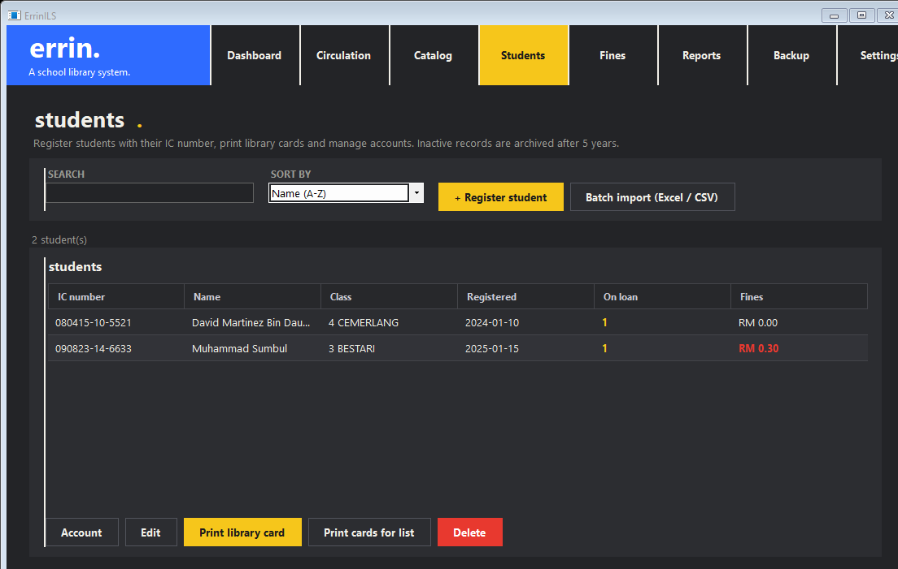
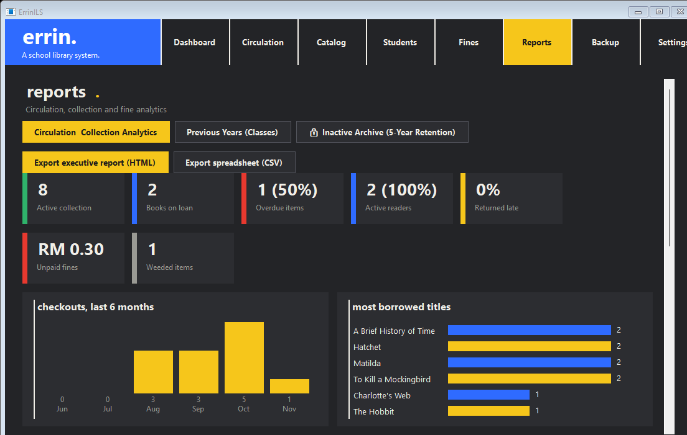

ErrinILS is an integrated library system (ILS) engineered specifically for primary, secondary, and vernacular school libraries. It is a lightweight Windows desktop program that tracks three core operational pillars:
The books and learning items in the library collection.
The students, teachers, and patrons registered to borrow them.
The loans, reservations (holds), and fines connecting patrons and items.
Everyday circulation does not require an internet connection. All records live locally on the library computer and are saved automatically each time you make a change. The internet is used only for two optional tasks: looking up book bibliographic details by ISBN, and searching remote library catalogues via Z39.50.
Unlike traditional enterprise software (such as Koha, SLiMS, or commercial cloud systems) that demand Linux servers, Apache/MySQL configurations, or costly recurring subscriptions, ErrinILS is built on a strict zero-external-dependency rule. Written in pure C# using only the base assemblies included with Microsoft .NET Framework 4.0, it requires zero database setup, zero runtime dependencies, and stores everything in a fast, robust SQLite database (%APPDATA%\Errin\errin-data.db).
1.3 What you can do with it
Circulation Desk
Sub-second checkouts, returns, renewals, and hold management with automated loan rule enforcement.
31-Source ISBN Union Lookup
Scan an ISBN to auto-fill title, author, publisher, DDC, and subjects across 31 Malaysian union and global library archives.
Malaysian Student ID
Full validation for 12-digit Malaysian IC and MyKid cards (YYMMDD-PB-###G) with scannable card printing.
Simplified View
Simplified touch/scanner desk with high-contrast screen, oversized buttons, and child-friendly wording.
Weeding & Maintenance
Track damaged, obsolete, or lost copies while permanently preserving historical borrowing statistics.
Wireless QR Remote Access
Connect smartphones and tablets over Wi-Fi using zero-password QR pairing and mobile camera scanning.
1.4 Which chapters you need
If you are…
Read…
The Teacher-Librarian or Administrator
Everything. Start with Chapters 3, 4, and 5, then proceed through Chapters 6 to 18.
A Student Helper or Library Prefect
Chapter 4.4 (barcode scanners), Chapter 7 (Circulation), and Chapter 8 (The Simplified View).
Names of buttons, tabs, and fields appear in bold (e.g. Check out, Save). Money is denominated in Malaysian Ringgit (RM). Dates follow the standard YYYY-MM-DD format (e.g. 2026-10-09), except in Simplified View where friendly dates appear (e.g. 9 Oct 2026).
Chapter 2
System Requirements & Hardware Guidelines
ErrinILS is deliberately lightweight. It runs smoothly on budget classroom computers without a dedicated server or third-party database engines.
Component
Minimum Requirement
Recommended Specification
Operating System
Windows 7 SP1 (32-bit or 64-bit)
Windows 10 or Windows 11 (64-bit)
Runtime
Microsoft .NET Framework 4.0
Microsoft .NET Framework 4.8 (built-in on Win 10/11)
RAM Memory
1 GB RAM
2 GB RAM or more
Hard Disk Space
10 MB for binary; ~50 MB for database & backups
100 MB free storage
Screen Resolution
1024 × 600 (min window: 900 × 600)
1366 × 768 or 1920 × 1080 (Crisp High-DPI PerMonitorV2)
Internet Access
None required (100% offline circulation)
Optional for ISBN copy-cataloguing & Z39.50 search
Barcode Scanner
Keyboard wedge scanner (USB)
Standard USB laser or 2D image scanner
Printer
Optional
A4 laser/inkjet or thermal sticker label printer
Native High-DPI Sharpness
Modern Windows 10 and 11 laptops often use 125%, 150%, or 200% display scaling. Older software looks blurry due to bitmap stretching. ErrinILS embeds native Windows PerMonitorV2 awareness, rendering razor-sharp ClearType text and proportional controls with zero performance penalty.
Chapter 3
Installing, Updating and Starting ErrinILS
3.1 Installing with the Setup program
Download ErrinILS-Setup-1.5.0.exe from the official website or GitHub release.
Double-click the installer. If Windows UAC prompts *"Do you want to allow this app to make changes?"*, click Yes.
If a blue *"Windows protected your PC"* box appears, click More info and then Run anyway. This occurs because open-source educational software is released without costly commercial certificates.
Follow the setup wizard, keep the default directory (C:\Program Files (x86)\ErrinILS), click Install, and click Finish.
Launch ErrinILS from your Desktop shortcut or Start Menu.
3.2 Running without installing (portable copy & USB drives)
If you do not have administrator permissions, extract ErrinILS-Windows-v1.5.0.zip to any folder or USB flash drive (e.g. E:\ErrinILS\) and double-click ErrinILS.exe. The portable version works identically and stores data in the same location.
3.3 Upgrading to a newer version
Run the newer setup installer over your existing installation. Your catalogue, patron list, and loan records are preserved intact. (It is always good practice to export a backup ZIP before upgrading).
3.4 Where your data is stored
All library information lives in your Windows user profile at: %APPDATA%\Errin\
File
What it holds
errin-data.db
Main SQLite database: entire catalogue, students, loans, holds, fines, class history, and policy settings.
errin-data.db.bak
Automatic rollback copy: saved before writes. Automatically recovers if needed.
errin-config.json
Administrator password hash (PBKDF2/SHA-256), Z39.50 settings, and paired device tokens.
3.5 Single-instance execution mutex
Only one instance of ErrinILS can run at a time. Launching a second copy brings the active window to the front, preventing conflicting database locks.
Chapter 4
Getting Started & Initial Configuration
4.1 The first time you run it
When ErrinILS starts without an existing database, it populates a starter database with 5 sample books (Charlotte's Web `B1001`, A Brief History of Time `B1002`, Hatchet `B1003`, The Hobbit `B1004`, Atlas of the World `B1005`) and one student (Aisha Rahman, `120315-10-0001`, Class 7A). Practise checkouts, then delete the samples when ready for real circulation.
4.2 A tour of the window
Top Navigation: 8 main tabs: Dashboard, Circulation, Catalog, Students, Fines, Reports, Backup, Settings.
Status Bar: Displays *"Saved to this computer (timestamp)"*. If the bar turns red and says *"NOT saving"*, the disk is full or read-only.
Notification Toast: Yellow transient toast near the bottom confirming results (e.g. *"Checked out. Due 2026-10-16"*).
4.3 Password-protected actions
The administrator password guards:
Opening the Settings tab.
Deleting catalogue records or student accounts.
Restoring from a backup.
Important: Change Default Password
ErrinILS ships with a built-in default administrator password (admin123). Change it immediately upon first launch in Settings → Admin Password.
4.4 Using a barcode scanner
USB barcode scanners operate as keyboard wedge devices. When opening Circulation or Simplified View, ErrinILS focuses the cursor in the scan box automatically. Scan the barcode, and the scanner transmits the digits followed by an Enter key to submit immediately.
Chapter 5
Library Rules and Numbering at a Glance
Rule
Default Value
Can it be changed?
Loan Period
7 calendar days
Fixed in core circulation engine
Renewals per Loan
Up to 2 renewals (+14 days max)
Fixed in core circulation engine
Max Items per Student
3 books
Yes: Settings → Max items per student
Fine per Day Late
RM 0.10 / day
Yes: Settings → Fine per day late
Block Checkout at Unpaid Fines
RM 5.00
Yes: Settings → Block checkout at unpaid fines
Student ID Standard
Malaysian 12-digit IC / MyKid
Enforced with calendar validation
5.3 When a student cannot borrow
Checkouts are refused if any of the following 6 rules fail (checked in order):
Student or book barcode not found in database.
Book is already on loan to someone else.
Student's unpaid fines equal or exceed RM 5.00.
Student holds one or more overdue books.
Student already has 3 books checked out.
Another student is waiting first in the hold queue for this title.
5.4 Custom Acquisition & Barcode Numbering Engine
In ErrinILS v1.5.0, both the Acquisition Number (Accession ID) and Barcode Number format structures are completely customizable in Settings → Item numbering & barcodes. Libraries can configure exact school accessioning schemes, year-prefixed sequences, zero-padded serial numbers, and custom starting offsets without database conflicts.
Placeholder Token
Syntax Example
Rendered Output (Sequence = 42)
{0:D6} or ###### or 000000
ACQ-######
ACQ-000042
{NUMBER:5} or {NUMBER}
LIB-{NUMBER:5}
LIB-00042
{YEAR} or {YYYY}
{YEAR}-######
2026-000042
{YY} & {MM}
B{YY}{MM}-000000
B2611-000042
Raw Digits (Default)
{0} (Offset = 1000)
1042
Starting Sequence Number: Set the starting baseline (e.g. 1001 or 50000) to match your physical accession ledger when migrating from another system.
Live Interactive Preview: Real-time sample badges in Settings demonstrate exact rendered results as you type or click presets (Default, 6 Digits, Year-Prefixed, 8 Digits).
Collision Avoidance Engine: The background engine dynamically compiles regular expressions from your format template, inspecting all existing records in SQLite to locate the highest numeric sequence and increment reliably without duplicates.
Figure 1: The ErrinILS Dashboard — Active collection counters, real-time overdue notices table, and top borrower rankings.
The Dashboard is your morning command center. It requires no typing and provides an immediate view of active operations:
Open Simplified View: One-click launch button for the simplified circulation view.
Executive Metric Counters: Total catalogued titles, registered students, active loans, all-time checkout tally, overdue book count, total unpaid fines balance, and active holds.
Overdue Items Table: Lists every student with late books, showing class, title, due date, days late, and total monetary amount owed. Use this list to print class reminder slips.
Top 10 Borrowers: Leaderboard showing top readers this month, this year, and all-time.
Chapter 7
Circulation: Check Out, Return, Renew and Holds

Figure 2: The Circulation Desk — Sub-second barcode scanner input, current active loans list, and reservation queue.
High-speed circulation logic covering student validation, fine/overdue blocking rules, book scanning, hold queues, and automatic returns.
7.2 Checking out a book
In the Check out card, scan the student's library card barcode (or type their 12-digit IC).
The cursor automatically advances to the Item barcode box. Scan the book barcode.
The transaction completes immediately. Toast confirms: *"Checked out. Due [YYYY-MM-DD]"*.
The new loan appears at the top of the Current loans list.
7.3 Returning a book
Scan the book barcode into the Return / Renew box and press Enter (or click Return). The student does not need to be identified: the book barcode identifies whose loan to close.
If on time: Toast confirms *"Returned. Thank you!"*.
If overdue: Toast confirms *"Returned. Late [N] days: fine RM [X.XX]"*.
If held by a classmate: Alert banner notifies *"Hold ready for [Student Name] ([Class])"*. Put the book aside on the hold shelf.
7.4 Renewing a book
Scan the book into the Return / Renew box and click Renew (or select the loan from the list and click Renew selected). Extends the loan for 7 days from today. Renewals are blocked if the book is overdue, renewed twice already, or on hold for another student.
7.5 Placing a hold
In the Place hold card, scan the student's IC and the book barcode. Holds can only be placed on books currently on loan. When returned, the first waiting hold converts to Ready for pickup.
Chapter 8
The Simplified View
Figure 3: Simplified View — Child-friendly touch interface, large color banner, and audit transaction log.
A locked-down, high-contrast, distraction-free screen designed for primary and secondary students to borrow and return books independently.
8.2 Opening and leaving Simplified View
Open: On the Dashboard, click Open Simplified View.
Exit: Click Exit Simplified View in the bottom right corner to return to the dashboard.
8.3 Simplified checkout workflow
Screen prompts: *"Ready. Scan a library card."*
Student scans card. Top banner turns green: *"Hello, [Student Name]!"*
Student scans book barcode. ErrinILS confirms on screen: *"Checked out: [Title]. Due back [Date]!"*
Child-friendly kiosk cycle: Card scan, stateful eligibility verification, friendly audiovisual feedback, book scanning, and automated session reset.
Chapter 9
The Catalog & Copy-Cataloguing
Figure 4: The Bibliographic Catalog — Multi-term searching, active vs weeded status filtering, and barcode generation.
9.4 31-Source Malaysian & International Copy-Cataloguing
Eliminate manual data entry for book acquisitions. Scan or type the 10-digit or 13-digit ISBN barcode in + Add record (or the dedicated Copy-Cataloging tool) and click Look up. ErrinILS executes an automated priority waterfall across 31 free bibliographic sources:
Pustaka Terbuka Union & Shards: Shared school and state open catalog network.
Katalog Induk Kebangsaan (KIK): Malaysian National Union Catalog.
Perpustakaan Negara Malaysia (PNM): National Library of Malaysia via Clarivate Vega Discover API.
Perbadanan Perpustakaan Awam Selangor (PPAS): Selangor Public Library Corporation.
Malaysian State Public Library Koha OPACs: PPAP (Penang), PPANPK (Perak), PPANK (Kedah), PPANPS (Perlis), PPANJ (Johor), PPAK (Kelantan), PPAT (Terengganu), PPAPH (Pahang), PPANS (Negeri Sembilan), PERPUSTAM (Melaka), Pustaka Negeri Sarawak, PNS (Sabah), PKL (Kuala Lumpur), PPJ (Putrajaya), PPL (Labuan), and u-Pustaka.
Malaysian Universities & National Archives: MALCat union, Universiti Malaya (UM), Universiti Kebangsaan Malaysia (UKM), Universiti Teknologi MARA (UiTM), UPSI, and Dewan Bahasa dan Pustaka (DBP).
International Union Catalogs: Library of Congress (Z39.50 `lx2.loc.gov:210`), Open Library API, Google Books API, HathiTrust MARCXML, and K10plus German union catalogue.
Title, Subtitle, Author, Publisher, Year, Dewey Decimal Classification (DDC / Call Number), and Library of Congress Subject Headings are populated automatically with zero keystrokes.
Priority waterfall and normalization engine fetching MARC 21 bibliographic metadata from Malaysian union and global sources.
9.5 Subject Heading (Perkara) Search & Browsing
The catalog provides a dedicated Subject Heading filter alongside title and author keyword searches:
Targeted Topic Filter: Type subject keywords (e.g., Sains, Sejarah, Fiksyen Remaja) into the Subject Heading box to instantly isolate titles classified under that topic.
A-Z Subject Sorting: Select Subject (A-Z) from the Sort dropdown to group books systematically by subject matter.
Catalog Grid Display: The main catalog view includes a dedicated Subject Heading column showing all indexed topics at a glance.
Librarians can select multiple books in the Catalog grid and print adhesive barcode or spine labels in bulk using standard desktop or label printers:
Multi-Row Selection Shortcuts:
Ctrl + Click: Select or deselect individual books non-contiguously.
Shift + Click: Select a contiguous range of catalog records.
Ctrl + A: Select all books currently displayed on the page.
Click & Drag: Highlight multiple rows quickly with the mouse.
Launch Batch Printing:
Click Batch label printing on the toolbar, or right-click any selected row and choose Batch Label Printing ([N] items)..., or click Labels ([N]) in the bottom bar.
Scope Selection:
Choose between printing Selected records, Current search / page results, or All active catalog records.
Label Formats:
Redesigned Full-Width Barcode Labels (3.5" × 1.1"): Features a large, centered 240-unit wide by 54-unit high Code 128 barcode with full-width centered book title across the top and human-readable barcode numbers centered below. The barcode is never cramped or smashed to one side.
Optional Parallel Call Number: Configured via Settings → "Include Call Number on barcode labels (parallel layout)". When enabled, the Dewey Call Number is positioned as a dedicated, full-width parallel row between the title and the barcode.
Spine Labels (1" × 1.5"): Displays bold multi-line Dewey call numbers formatted specifically for book spines. Books without call numbers are automatically identified and safely skipped.
Live Antialiased Preview:
The built-in interactive preview panel renders exact millimeter-accurate label artwork before printing. Use « Prev and Next » buttons to inspect any book's label in the batch.
Copies & Page Layout Engine:
Set copies per record (1 to 50). The layout engine automatically calculates rows, columns, and margins for standard A4 adhesive label sheets.
End-to-end printing pipeline from DataGridView multi-selection to wide-barcode layout rendering, optional parallel call number positioning, and Windows print spooler dispatch.
Chapter 10
Students & Patron Management

Figure 5: Student & Patron Management — Malaysian IC verification, borrowing histories, and card printing.
10.2 Registering a student
Click + Register student.
Type the 12-digit Malaysian IC or MyKid number. Dashes are added automatically (`YYMMDD-PB-###G`).
Enter **Full Name**, **Class / Grade** (e.g. `4 Melur`), and optional **Guardian Phone**.
Click **Register** and print their scannable credit-card-sized library card.
10.5 Malaysian IC & MyKid Mathematical Validation
ErrinILS includes a built-in mathematical verification engine for 12-digit Malaysian Identification numbers (MyKid / MyKad):
Calendar Validation: Birth month must be within 01–12, and calendar day must be mathematically valid for the specific month and leap year.
Normalization: Automatically parses raw unpunctuated input into standard YYMMDD-PB-###G formatting across all tables and barcode cards.
Bulk Import via Excel / CSV: The zero-dependency OpenXML engine allows instant registration of whole school cohorts from .xlsx, .csv, or .txt files. Duplicate ICs update existing student details rather than generating conflicting records.
10.9 Automated 6-year data retention rule & Class Archiving
To safeguard student privacy and prevent database bloat, Lib.Purge() safely moves inactive students into a password-protected **Inactive Archive** if they have had no borrowing activity for 6 years. Records with active loans or unsettled fines are never purged. In addition, an **Annual Class Snapshot** automatically archives class rosters every December 31st to preserve historical Nilam reading cohorts.
From MyKid IC validation and bulk Excel ingestion to active circulation, reading awards, class snapshots, and 6-year privacy deactivation.
Chapter 11
Fines & Overdue Holdings Management
Figure 6: The Fine Tracker — Real-time outstanding balances, active overdue holding loans, payment recording, and fine waivers.
In ErrinILS v1.5.0, the Fines Management module tracks both assessed unpaid fines (from books returned late) and active unreturned loans currently held by students past their due dates. This provides librarians with complete monetary oversight without having to cross-reference multiple screens.
11.2 Live Overdue Holdings & Accrued Fines
Any student currently holding an overdue book appears directly in the Fines ledger with a prominent crimson Holding (Overdue) status badge:
Real-Time Accrued Calculation: Shows the exact calculated fine to date: Days Overdue × Daily Fine Rate (RM 0.10).
Comprehensive Balances: Summary cards instantly aggregate total unpaid balances, active overdue books held, and lifetime collected fines.
11.3 One-Click Librarian Actions
Pay: When a student returns the book and pays cash, click Pay. The system records the payment, automatically returns the book, and checks it back into the catalog in one transaction.
Waive: If the library excuses the fine (e.g. medical leave or flood disaster), click Waive. The book is checked in and the accrued fine is forgiven.
Return (Check In): If the student returns the overdue book but cannot pay immediately, click Return. The book is checked back into stock, and the fine remains on their account as an assessed unpaid debt.
Borrowing Block: If a student's unpaid fines equal or exceed the threshold (default RM 5.00), checkout is automatically blocked across desktop and kiosk views until settled.
💰 Flowchart 7: Fines Management & Active Overdue Holding Lifecycle
Daily overdue monitoring, real-time fine accrual, unified ledger display with Holding (Overdue) status, 1-click Pay/Waive/Return triage, and automatic block lifting.
Chapter 12
Collection Weeding & Maintenance
Weeding allows you to withdraw damaged, obsolete, or lost books without destroying historical circulation records or distorting Nilam reading awards.
12.3 Weeding workflow
In the **Catalog** tab, select the book copy and click **Weed Copy**.
Select reason: Condition / Damaged, Obsolete / Outdated, Lost / Unreturned, or Duplicate Excess.
Confirm weeding. The copy is withdrawn and blocked from checkout and hold requests.
Filter the Catalog by "Weeded Items" at any time to inspect withdrawn stock, generate weeding disposal reports, or restore a found book.
🗑️ Flowchart 8: Collection Weeding, Maintenance & Collection Health Lifecycle
Stock audit, multi-reason withdrawal categorization, circulation blocking, historical data preservation, and 1-click catalog restoration.
Chapter 13
Remote Access, Web OPAC & Static Hosting
Figure 7: Settings & Remote Access — Policy parameters, admin password, OPAC configuration, and wireless QR code device pairing.
ErrinILS features a built-in pure C# HTTP server (TcpListener) binding to all network interfaces (0.0.0.0:8585), allowing smartphones, tablets, and computers on school Wi-Fi or LAN to access the library wirelessly.
In Settings → Remote Access & Device Pairing, click Pair New Device.
Scan the displayed sharp QR code with your smartphone camera.
The web browser opens with the 6-digit pairing code pre-filled. Tap Verify & Pair.
A persistent 32-byte cryptographic token (X-Errin-Token) authenticates the device. You never need to enter passwords again.
The mobile web interface matches the desktop dark charcoal design and allows staff to use their phone camera or handheld scanners for stock audits and catalog management.
13.4 Online Public Access Catalog (OPAC)
The OPAC provides a clean, responsive public search portal for students, teachers, and parents:
Local Network URL: Open any browser on the school network and navigate to http://<server-ip>:8585/opac (or click Open OPAC in Browser in Settings).
Signature Theme: Designed with the desktop software's charcoal palette, golden yellow accents, royal blue branding, and clear status cards.
Search Capabilities: Multi-token keyword search across title, author, and call number, plus a dedicated Subject Heading filter and interactive topic tag cloud.
Live Copy Availability: Immediately shows whether copies are on the shelf, on loan (with due date), or held.
13.5 Optional Patron Self-Service Login
To protect student privacy and keep the OPAC simple for younger students, Patron Login is OFF by default:
Enabling Login: In Settings → OPAC & Online Catalog, check the box: Enable Patron Login for OPAC.
Student Sign-In: Students click Log Masuk Murid / Patron Login in the top header and enter either their Student ID (id_murid) or Malaysian IC / MyKid (no_pengenalan).
Student Dashboard: Once logged in, students can review their active borrowed items, loan due dates, calculated overdue fines (RM), reading history, and place holds on books currently loaned out to others.
Multi-interface binding (0.0.0.0:8585), public catalog browsing, subject heading filtering, patron MyKid authentication, and self-service book reserves.
Student Dashboard: Once logged in, students can review their active borrowed items, loan due dates, calculated overdue fines (RM), reading history, and place holds on books currently loaned out to others.
13.6 1-Click Static OPAC Export for GitHub Pages (Zero-Server Setup)
Schools without a dedicated computer left running 24/7 can publish their library catalog to the web for free using GitHub Pages:
ErrinILS Scanner is a native, high-speed Android companion app built in Kotlin, Jetpack Compose, CameraX, and Google ML Kit Barcode Scanning. It converts any Android phone (Android 7.0 / SDK 24+) into a dedicated library tool:
Installation: Download ErrinILS-Scanner-v1.4.3.apk from the Download page. Tap to install (enable "Install unknown apps" if prompted). Grant camera permission.
1-Second Wireless Pairing: In desktop ErrinILS (Settings → Remote Access), click Pair New Device. In the Android app, tap the QR scanner icon to scan the computer's screen QR code. Devices connect immediately over Wi-Fi without passwords.
Mode 1: Wireless Barcode Wedge Gun (Pengimbas Kod Bar):
Turns your phone into a handheld wireless barcode gun.
Every scanned barcode (EAN-13, Code 128, QR, Code 39) is streamed via HTTP POST (/api/wedge) directly into whatever input box is active on your PC screen, automatically pressing Enter.
Equipped with flashlight toggle, audible success beep, vibration feedback, scan history, and "Salin Semua" (Copy All to clipboard).
Mode 2: Mobile Add Book with Camera ISBN Lookup (Daftar Buku Baharu):
Point your phone camera at the printed ISBN barcode on the back cover of any book.
ErrinILS queries the 31 union catalogs (and Google Books / OpenLibrary fallbacks) to retrieve Title, Subtitle, Author, Publisher, Year, Dewey Call Number, and Subjects.
Scan the library's adhesive accession barcode sticker affixed to the book.
Tap Simpan ke Katalog to commit the book directly into the school catalog.
Tap Daftar Buku Seterusnya to immediately scan the next book in the stack.
Librarians walking the book stacks with a smartphone, tablet, or secondary laptop can catalog books directly from the mobile Remote Access web interface:
Open Catalog: Navigate to the Catalog tab in the mobile web app.
Launch Tool: Tap 📖 Copy-Cataloging on the action bar.
Scan or Type ISBN: Enter or scan the 10 or 13-digit ISBN.
31-Source Retrieval: Tap 🔍 Fetch Metadata. The server queries Malaysian national, state, academic, and international archives.
Inspect & Save: The full bibliographic card appears (Title, Subtitle, Author, Publisher, Year, DDC Call Number, and Subject Headings). Enter or generate the shelf barcode and tap + Save to Catalog.
Inline Add/Edit Book Lookup: When adding or editing books via the standard + Add Book modal, tap 🔍 Lookup next to the ISBN field to auto-populate all bibliographic fields instantly.
ErrinILS provides a zero-dependency dual cloud architecture that allows multi-station library operation across multiple computers:
Private Student Records via Google Drive: Sensitive personal data (patron names, IC numbers, contact information, loan history, and unpaid fines) syncs directly to Google Drive cloud (school.library@gmail.com) via a lightweight Google Apps Script Web App. No third-party desktop sync apps or Google Drive client required.
Open Bibliographic Data via GitHub: Public domain book catalog data conforms strictly to the Pustaka Terbuka Data Provider Standard (PPAPP model), syncing single-record MARCXML shards and holdings tables to GitHub (pustaka-terbuka/sk-taman-ria). Pushes operate via Git CLI or direct HTTPS Git Database REST API.
Multi-PC Parity: Running ErrinILS on Circulation PC 1 and Cataloging PC 2 pulls and syncs both data streams, ensuring seamless multi-desk library management.
Separation of private patron data (Google Drive direct cloud) and public catalog metadata (GitHub Pustaka Terbuka).
Chapter 14
Reports, Reading Champions & Analytics

Figure 8: Reports & Reading Champions — Top 25 reader leaderboard, 6-month borrowing trajectory, and Dewey 100s breakdown.
Reading Champions Leaderboard: Top 25 student readers ranked by total books borrowed (directly mapped to Nilam reading records).
Circulation Trajectory: Monthly borrowing volume trends over the past 6 calendar months.
Dewey Decimal 100s Breakdown: Distribution of collection across the 10 DDC classes.
Dormant Collection Audit: Identifies books with zero borrowings over the past 12 months.
1-Click CSV Full Report: Exports an executive spreadsheet ready for school leadership meetings.
Chapter 15
Backup, Restore and Disaster Recovery
15.2 Making a backup
In the **Backup** tab, click **Export Backup (ZIP)**. Choose a destination on an external USB flash drive. Keep at least three weekly backup copies.
15.3 Restoring from backup
Click **Restore from backup (password)**, enter the administrator password, and select your backup file.
15.4 Database Optimization & Vacuuming
Over months of high-volume book borrowing, student registrations, and catalog additions, the SQLite database storage can become fragmented. ErrinILS includes a built-in Optimize Database utility (accessible from the Backup and Settings tabs):
Integrity Verification: Executes PRAGMA integrity_check; to confirm that all B-trees, indices, and page allocations are 100% free of corruption.
Defragmentation & Space Reclamation: Runs VACUUM; to rebuild the database file from scratch, releasing unused disk blocks back to the operating system and compacting storage.
Query Optimization: Executes PRAGMA optimize; to update SQLite query planner statistics, keeping catalog and student searches running at sub-millisecond speeds even on 1 GB RAM school computers.
High-performance SQLite engine with WAL journaling, zero-dependency ZIP backups, VACUUM defragmentation, and automatic schema recovery.
Chapter 16
Settings and Administration
Configure school name, daily fine rate (default: RM 0.10), max loan limits (default: 3), and fine block threshold (default: RM 5.00). Change administrator password, configure mandatory student registration fields, enable or disable OPAC Patron Login, launch the local OPAC in your browser, export static OPAC files for GitHub Pages, and manage the optional Z39.50 server.
16.4 Automatic Software Updates
ErrinILS includes a built-in zero-dependency update checker connecting to official GitHub releases over modern TLS protocols:
Startup Update Detection: When enabled, ErrinILS checks for new releases on startup. A friendly banner notifies you when an update is available.
1-Click Update & Restart: Click Update and Restart to download the new version with a live progress bar.
Intelligent Package Handling: If running from Program Files, the updater launches the NSIS setup wizard with Windows UAC elevation. If running standalone or portably from a USB drive, the updater safely executes an atomic replacement script and restarts the application cleanly.
Zero Data Loss: All database tables, catalog records, loan histories, and configuration settings in %APPDATA%\Errin\errin-data.db remain completely intact.
Chapter 17
Recommended Operational Routines
Daily: Review Dashboard overdue items table; settle fines; shelve returned books flagged for holds.
Weekly: Export a `.zip` backup to an external USB flash drive every Friday; audit uncollected holds.
Termly: Onboard new student classes; catalog new acquisitions; award Nilam certificates from Reading Champions.
Annual: Perform shelf stocktaking using paired mobile scanner; run 5-year inactive patron purge.
Chapter 18
Troubleshooting Guide
Problem Encountered
Likely Cause
Exact Solution
"Windows protected your PC"
Unsigned open-source release.
Click More info, then click Run anyway.
Setup reports missing .NET
Windows 7 without runtime.
Install free Microsoft .NET Framework 4.8.
Status bar is red: NOT saving
Hard disk full or write-protected.
Free disk space; export emergency backup to USB drive.
Scanner does not submit
Scanner not sending Enter key.
Program scanner in USB HID Keyboard mode with CR/LF suffix.
Phone cannot connect to QR Web App
Phone on different Wi-Fi network.
Connect phone to the same Wi-Fi SSID as the PC.
Forgot Administrator Password?
Close ErrinILS, press Win + R, enter %APPDATA%\Errin, and rename or delete errin-config.json. Launch ErrinILS; the password resets to default (admin123). Set a new password immediately in Settings.
Chapter 19
Frequently Asked Questions (FAQ)
What is the default administrator password? The factory default administrator password is admin123. You can change it to any password of 4 or more characters in Settings → Admin Password.
Can multiple devices access the system at once? Yes. Enable the built-in Remote Web Server in Settings to let smartphones and tablets perform circulation and cataloguing over school Wi-Fi.
Are student records private? Yes. All database files remain strictly on your local PC. ErrinILS transmits no personal student data over the internet.
Can we change the 7-day loan duration? In ErrinILS (v1.5.0), the loan duration is fixed at 7 days with up to 2 renewals (21 days max). Fine rates, custom numbering templates, barcode label designs, and block thresholds can be customized at any time in Settings.